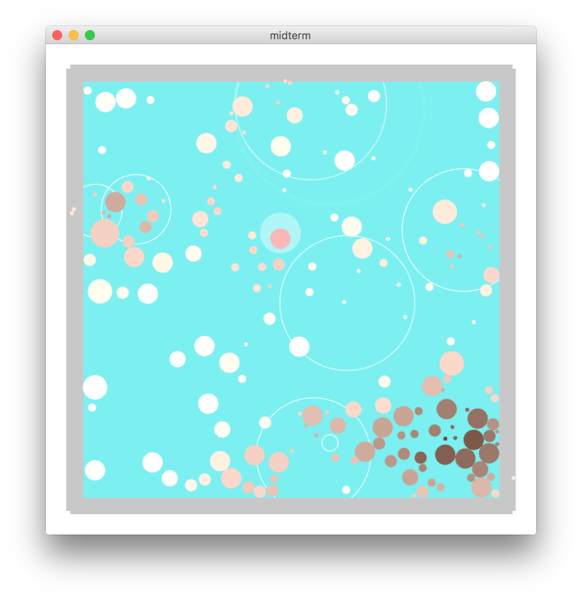
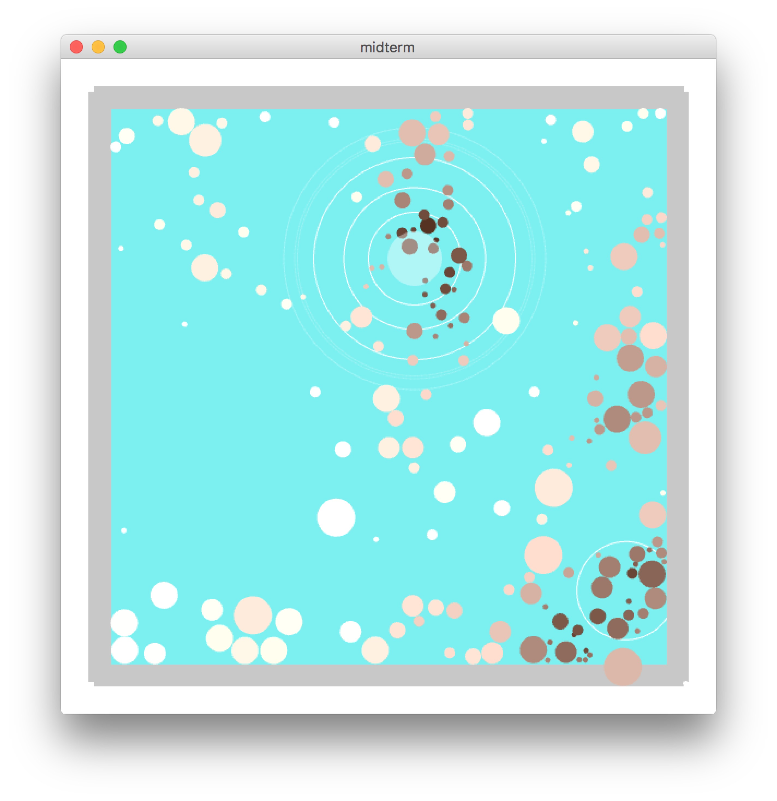
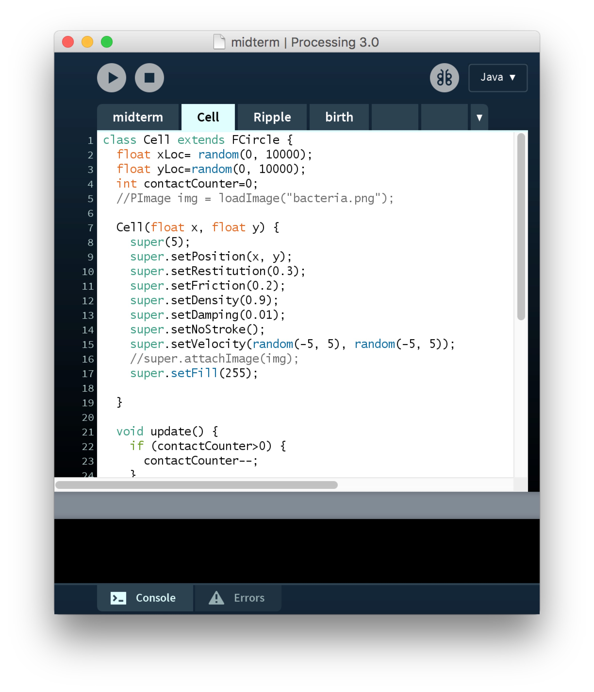

Tiny Glass Tank
Shirley's Midterm Project Documentation
(built in Processing with Fisica, Minim, and Leap Motion)

ABOUT THIS PROJECT:
The final version of my midterm project becomes a tiny glass tank with many little cells in it.
Basically, this is a program that makes you feel like you are watching a minimal version of jellyfish tank, and makes you relax through its sound and vision.
These little cells are born in a very small size and they are able to merge bigger.
All the cells behave like a noise walker, so they are all moving naturally and independently in the system.
The color of the cell gets darker according to the density around it.
Small cells can go very fast in order to have a greater chance to grow, while the larger ones are extremely slow.
When a cell get large enough, it will burst and give birth to several tiny cells. In this way, the tank is able to maintain the balance itself.

CONTROLS:
However, as the system runs, the cells may become less and less as they might die more.
You can add new cells into the tank by clicking the mouse and shaking you hand with Leap Motion!
You can also drag the cells to other place if some parts of the tank get too crowded.

PROCESS & CHALLENGES:
The whole project looks very different than I described in the proposal. This is mainly because I found there is much more limitations than I thought using a physical library.
For instance, I was planned to have different shapes of cells and color them in different hues of color.
Unfortunately, the fill method in fisica classes seems not to support HSB mode as well as tint(), which means if I attach an image to an object I am not able to change its color and I can only set the colors with RGB.
I was intended to use FCompound to make complex shaped, but I give it up because it is not appealing and needs too much works.
Also because all the objects are built with Fisica, it actually becomes hard to update the cells and change the attributes according to different situation.
I spent a lot of time reading the documentation fo Fisica, and realized that I have to expend the class of FBody, which I never done before. Thankfully, this was easier that I thought and it gave me much freedom on customizing my objects.
The other challenge I met is the sound effect. Initially, in order to make multiple sound effects, an AudioPlayer was created each time when the cell burst.
But this led to extreme memory use and almost froze the whole program after a certain amount of time.
This finally got fixed by using AudioSample instead of AudioPlayer. For each time a burst happens, it will only need to trigger the sample but won't load and store the sound file again.
For me, the largest take-away of this project is, the libraries may significantly save your code, but they may also make you do much extra work.